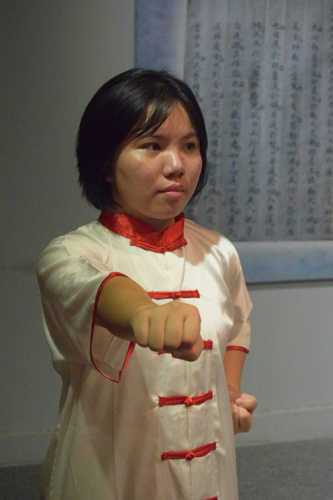
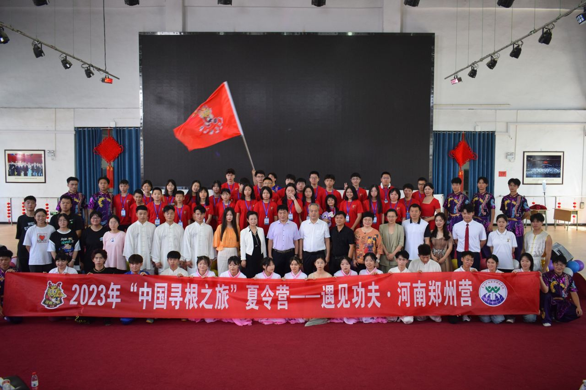
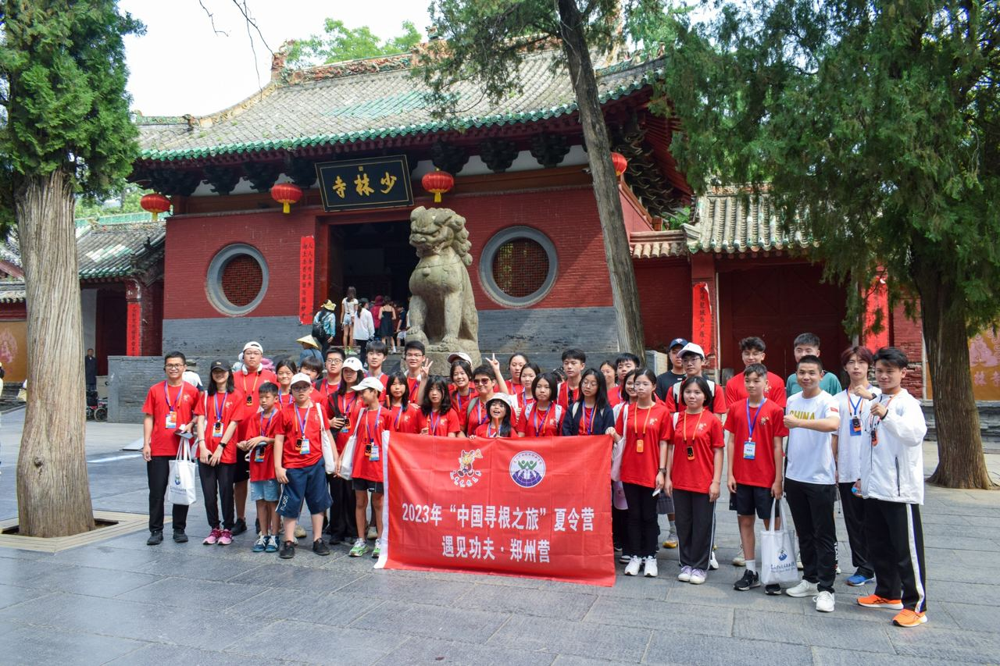
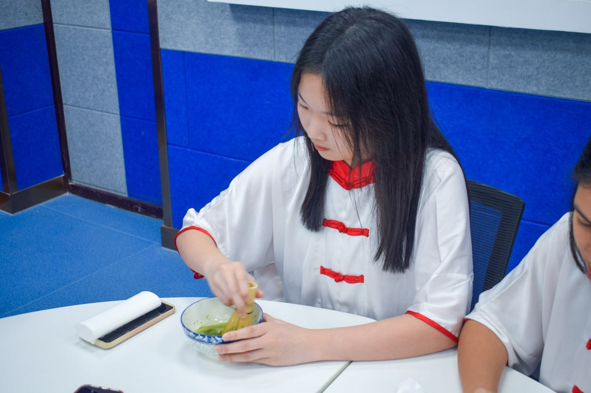
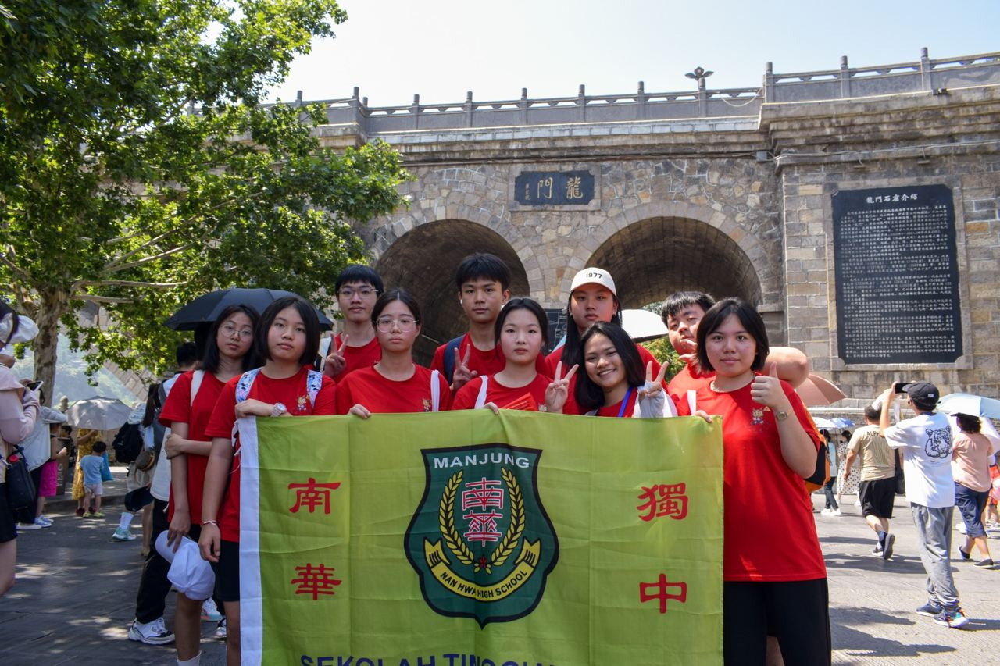
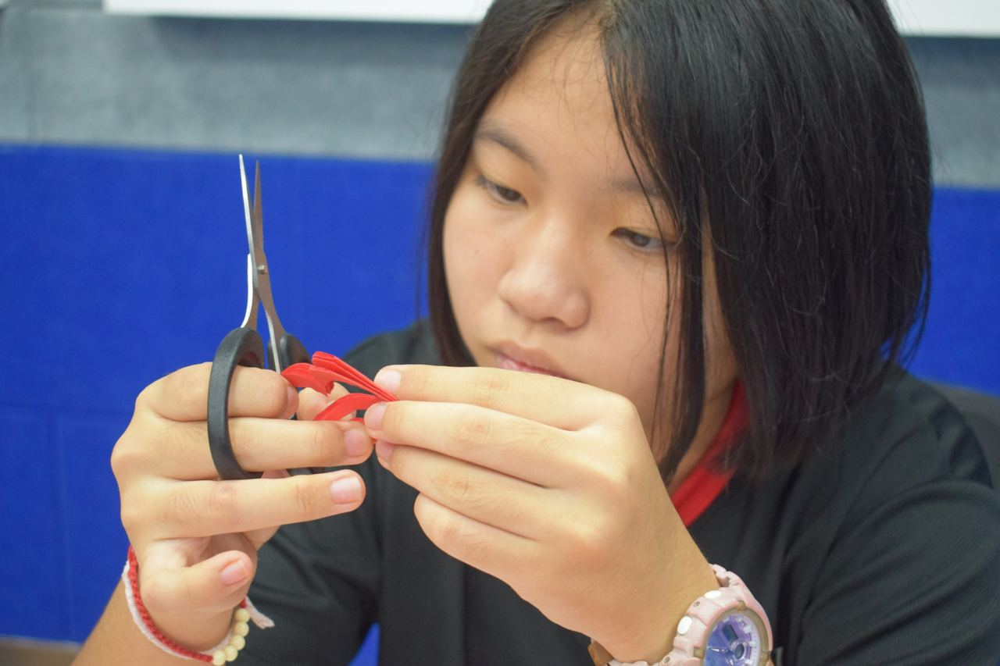
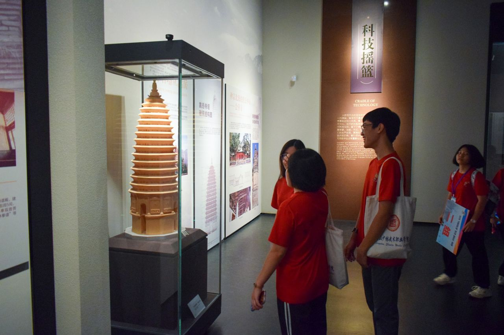
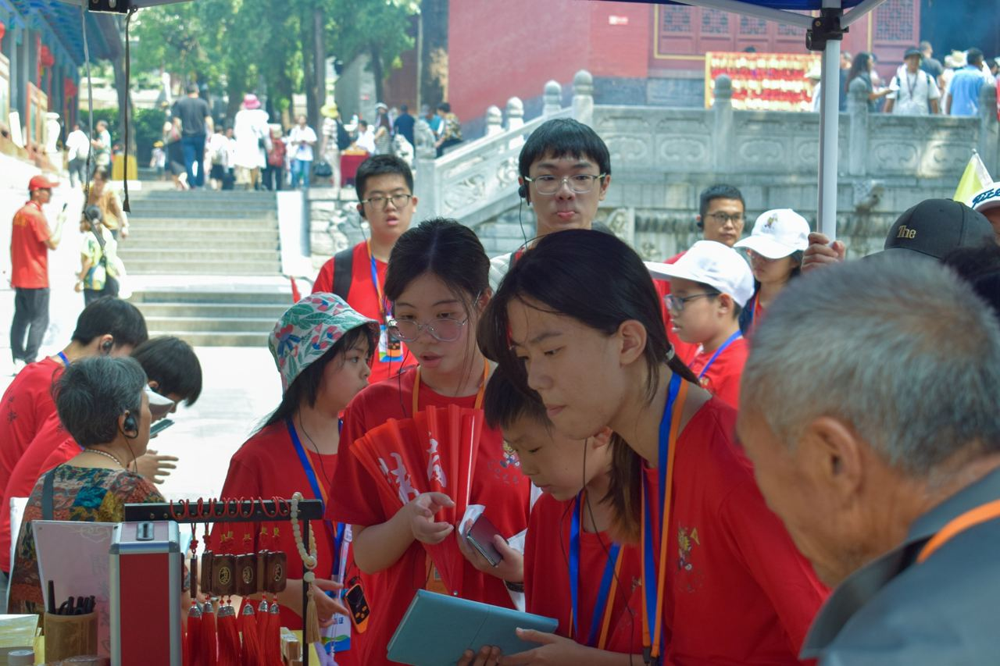

🌍 寻根之旅·河南行 🌟
🌍 寻根之旅·河南行 🌟
在上个月，本校的十名学生应邀前往中国进行一场令人心驰神往的寻根之旅！🌏✈️
🗓️ 日期：2023年7月16日至7月26日
📍 地点：中国河南省
在这个美丽的十天里，我们不仅仅是旅行者，更是知识的捕手和文化的探索者，感谢河南省侨委会和塔沟武术学校的精心组织。
🌏 跨国友谊 🌏
这次旅程汇聚了来自法国、捷克和英国的华裔同胞，我们一同追寻家族的根源，感受中华文化的魅力。不同国度的我们在河南这片土地上相聚，用心去感受，用情去体验。
🏯 主要参观地点 🏯
🔸 少林寺：感受武学的精髓，领略少林文化的博大精深。
🔸 龙门石窟：在千年的雕刻中感悟艺术的力量，感受历史的沉淀。
🔸 河南博物馆：穿越时光，聆听河南的故事，感受中华五千年的文明。
🔸 河南观星台：与星辰对话，领略宇宙之广阔，心灵得以净化。
📚 主要学习课程 📚
🥋 功夫：在少林寺内，我们领略了武学的精髓，不仅是身体的锻炼，更是心灵的修炼。
🍵 茶艺：在古老的茶馆，我们学习了沏茶的艺术，体会到茶文化的博大精深。
✂️ 剪纸：剪纸艺术是一门精湛的手艺，我们在老师的指导下，亲手创造了属于自己的艺术作品。
这趟由河南省侨委会主办的寻根之旅，不仅仅是走过的路，更是跨足国界的文化之旅，是友谊的牵引，是文化的碰撞。感谢每一位参与者，感谢河南省侨委会的支持与帮助，是你们的热情和好奇，让这次寻根之旅充满了无限的精彩和意义。
让我们怀着满心的感激和留恋，一起期待未来的冒险！🌈✨







